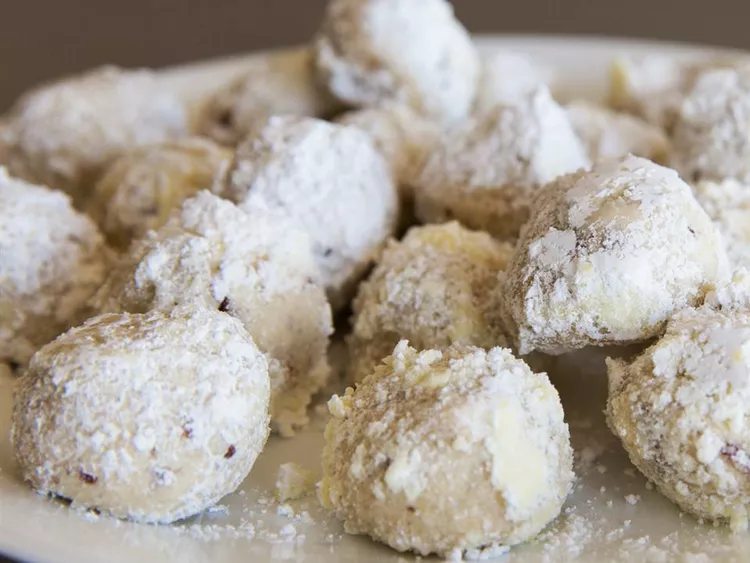

Snowballs

Description:
Snowball cookies are technically called Mexican wedding cakes or Russian teacakes, but my grandmother gave up on us calling them that years ago! With a rich, nutty flavor from finely chopped pecans, and a sweet, powdery coating from confectioners' sugar, these tiny, buttery treats are truly the most delicious melt-in-your-mouth morsels.
Ingredients:
- 1 cup unsalted butter, softened
- ½ cup powdered sugar
- 1 teaspoon vanilla extract
- 2 ¼ cups all-purpose flour
- 1 cup very finely chopped pecans
- ¼ teaspoon salt
- ⅓ cup powdered sugar, or more as needed
Steps:
- Preheat the oven to 350 degrees F (175 degrees C).
- Beat butter, 1/2 cup powdered sugar, and vanilla with an electric mixer in a large bowl until smooth. Gradually mix in flour, pecans, and salt until completely incorporated. Roll dough into walnut-sized balls and place 2 inches apart onto ungreased baking sheets.
- Bake in the preheated oven until bottoms are light golden brown but tops are still pale, 12 to 15 minutes. (Try not to let cookies get too brown: it's better to undercook them than to overcook them.)
- Remove cookies from the oven and let sit on the baking sheets briefly before removing to wire racks.
- Place 1/3 cup powdered sugar in a shallow bowl; roll hot cookies in sugar to coat, then return to the wire racks to cool. Once cooled, roll cookies in the powdered sugar once more.